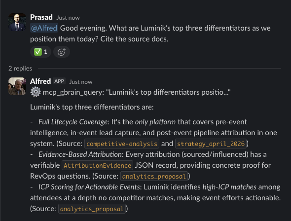

For six months my MacBook Pro has been doing two jobs. Neither got my full attention.
Mine: writing code, drafting proposals, running customer calls. Luminik's: overnight agent runs, scheduled checks against production, anything that should quietly exist while I am not at the keyboard. Two jobs, one box, 16 GB of RAM, and my lid-open / lid-closed status deciding whether the second job ran at all.
In practice that meant closing Claude Code sessions before sales calls so the meeting app would not stutter. Propping the lid open through dinner because an overnight agent was mid-run and I did not want to lose the state. Deciding, every evening, whether to take the laptop home or leave it working in the office. Small concessions, individually. They compounded.
Last week I stopped making them. A Mac Mini M4 now sits in the corner of my desk, running 24/7, dedicated to the work the company needs done while I sleep, travel, or sit across a table from a customer. By the evening of setup day it was running a 24/7 agent, holding a queryable knowledge base of every spec I have written, and executing two scheduled jobs on cron. I filed or patched three upstream bugs along the way. Nothing in the setup is billed per token.
What follows is the stack, those three bugs with the PR and issue links, and why the hardware boundary turned out to matter more than I expected. It is the hardware complement to the software stack I described in What It Actually Costs to Build a Serious Product Alone in 2026, and it takes the specs and CLAUDE.md discipline from gstack, CLAUDE.md, and the Work That Frameworks Don't Cover one step further by making that content queryable from outside a single Claude Code session.
Why a Dedicated Machine
Running both jobs on one MacBook Pro compounded costs quietly, and all of them pointed in the same direction: an always-on company needs an always-on machine, and a portable laptop optimised for the person carrying it cannot be that machine. Four specific problems made the case.
- The MacBook Pro is where I take sales calls and customer conversations. During those hours Luminik needs me fully present and the machine fully available, not fighting parallel coding agents for RAM or thermal-throttling mid-video-call. The laptop's primary job is mine, not the company's background processes.
- Parallel coding agents saturate 16 GB quickly. A single Claude Code session is comfortable. Three in parallel, plus a browser with customer tabs, plus a meeting app, and the box starts swapping. Serial work I could manage. The plural agent team, which is the direction this is heading, I could not.
- Claude Code remote dispatch needs a running host. The iOS shortcut and web-based dispatch both assume the actual engine is awake somewhere. When my laptop lid closes at dinner, that path dies with it. The whole appeal of remote dispatch is that it survives my state, not depends on it.
- The work I want to scale beyond my own hours is much bigger than "run more code." Triaging Dependabot and CVE alerts before they pile into a weekend migration. Running SAST/SCA sweeps against every merge so an agent-written commit does not quietly introduce an auth bypass, a leaked secret, or an unsafe deserialization path. Keeping test coverage above the line when I am merging fast. Writing the tests the agent forgot to write. Summarising customer calls into next-action signal. Keeping sales collateral in sync with current positioning. Producing first-draft SEO content against the keywords that matter this week. Drafting replies to GTM inbound in the voice we actually sell in. All of this has the shape of recurring work someone would do if I had the hours. The whole point is to not need those hours.
The separation is an old idea. Build machines and development machines have been different boxes in most engineering setups for decades. What is new is that the always-on layer also needs to be a thinking layer, not just a build runner. It holds context, makes retrievable decisions, and answers questions in the house style. Today one role is filled. The direction is a small set of scoped roles across product, sales, marketing, and customer delivery, each running on this substrate. A CI runner cannot do those things. A dedicated machine with a resident agent, and eventually a small team of them, can.
The Stack
The machine is a Mac Mini M4 with 16 GB of RAM. I named it Alfred because it runs below the surface while I work on other things. On it:
- Hermes Agent (open-source, Nous Research) as the always-on orchestration layer, installed as a
launchdservice withKeepAliveenabled. - Gemini 2.5 Flash via the free Google OAuth tier handles the agent's routing and tool calls.
- Claude Code via ACP delegation handles anything the agent decides is a real coding task. That subprocess authenticates against my existing Claude Max subscription.
- gbrain (open-source, Garry Tan) holds the knowledge layer. 107 markdown pages at the moment: all of Luminik's specs, every
CLAUDE.mdacross six repos, and my positioning docs. Embedded with Gemini, stored in a local PGLite database, queryable from the agent via MCP. - WhatsApp and Slack gateways give me access to the agent from anywhere. WhatsApp self-chat is the primary surface. A
#alfredchannel in the Luminik workspace is the secondary. - Two cron jobs. One at 3am re-ingests every spec and
CLAUDE.mdfile into gbrain so the knowledge layer stays current. One at 7am produces a short digest of overnight CI failures, ECS task count changes, and GCP credit burn.
The model is cheap-and-always-on for the orchestration loop, expensive-and-occasional for the actual work. Gemini Flash is free at the tier I need. Claude Code is billed under a subscription I already pay for. Nothing in this setup is per-token.
What Moves to the New Machine
Cross-session memory
CLAUDE.md files solve one level of this. Each repo reminds the agent of its own conventions. The scope is a single repo. Cross-session memory, the kind that remembers what a customer said last month or which enrichment vendor we decided to prioritize, lives outside that scope. Before Alfred it lived in my head and in scattered markdown files.
gbrain is the layer that gives it a home. Specs, conventions, positioning, and proof points get ingested once and then re-ingested nightly. When I ask the agent to summarize the enrichment architecture, it runs a vector query against the brain and returns an answer with citations to specific pages. When specs change, the nightly cron picks them up. The agent's view stays current without manual intervention.

mcp_gbrain_query tool call runs against the local knowledge base; the answer cites the specific source documents it pulled from.
This is the cross-session coordination problem I described in the gstack post. A specs repo is necessary. Making it queryable by an always-on agent is the next step, and it is easier to run on a machine that does not sleep.
Production visibility
Alfred has a separate AWS identity from mine. A scoped IAM user with read-only permissions, not my SSO session. It can describe ECS services, query CloudWatch logs, check RDS status. It cannot delete, create, or modify anything. If the machine is compromised, the blast radius is a read leak, not an outage.
The first thing this unlocked was a small inventory exercise. I asked the agent to compare what was actually running in AWS against what my Terraform described. It came back with a list of low-grade discrepancies: services whose live state had drifted from their declared state, an old CloudWatch alarm still pointing at an SNS subscription that no longer existed, container images in ECR from an experiment I had forgotten about. None of it was on fire. All of it was the kind of thing that lives in the "I should do an AWS audit sometime" category and never actually gets done.
Cleaning it up took a couple of small PRs. The fixes are not the interesting part. The interesting part is that a newly issued read-only identity, used in its first hour of existence, produced a punch list I had been putting off for weeks. That is a better argument for having an always-on read-only surface on your infrastructure than any security essay I could write.
Scheduled maintenance
Anything that needs to run on a schedule now has a place to run. The two jobs today are the gbrain re-ingest and the morning digest. That is enough to start. A future job is the one I actually want: a weekly spec-vs-code diff that opens a GitHub issue when a spec describes behavior the code no longer implements. Documentation drift is hard to eliminate. A scheduled detector that makes it visible is the realistic goal.
Three Upstream Bugs Along the Way
Setup took longer than the READMEs suggested because three shipping assumptions in the tools I used were wrong or badly defaulted. All three are traceable in public trackers. The first was resolved upstream the same day I hit it. The other two are still open at time of writing, with community PRs that work locally.
Bug 1: Gemini auth regression (Hermes Agent PR #11961 → #12204 → #12251)
Every Gemini call on my fresh install failed with an opaque HTTP 400 API_KEY_INVALID despite a valid AI Studio key. The git-blame trail was short: PR #11961 had been merged earlier that morning (2026-04-18, 04:30 UTC) to fix an older dual-auth 400, switching Google AI Studio auth from Bearer to the x-goog-api-key header. Google's /v1beta/openai endpoint had since changed behaviour and now rejected that header while accepting Bearer. The fix became the regression.
I isolated the repro against the live endpoint with a bare openai Python client, same key and SDK version Hermes was using:
# Bearer (what the OpenAI SDK emits by default)
OpenAI(api_key=<key>, base_url="...generativelanguage.googleapis.com/v1beta/openai")
# → 200 OK ✓
# x-goog-api-key (what Hermes started sending after #11961)
OpenAI(api_key="not-used", base_url=..., default_headers={"x-goog-api-key": <key>})
# → 400 API_KEY_INVALID ✗
A community revert was already open as PR #12204 ("Fix gemini auth header") by alizane. I applied the diff locally across run_agent.py and agent/auxiliary_client.py, confirmed both primary and auxiliary paths recovered, and left a comment on the PR so other users hitting the same 400 could find it in search:
"+1, confirming the repro on v0.10.0 with Gemini 2.5 Flash via AI Studio key. [...] Google's/v1beta/openaiendpoint now explicitly rejects thex-goog-api-keyheader that #11961 added, while accepting the Bearer token the OpenAI SDK emits by default. [...] Applied this PR's change as a local patch on 2026-04-18 and my Gemini calls work again through both primary (run_agent.py) and auxiliary (agent/auxiliary_client.py) paths. Would be great to get this merged — users hitting #12127 and #12168 have no other workaround short of downgrading."
Maintainer teknium1 shipped a cleaner superseding fix in PR #12251 ("fix(gemini): hide bad Google models and restore bearer auth"), merged at 19:52 UTC the same day (about 15 hours after the regression was introduced). That closed #12204 as redundant. My local patch reverts cleanly on the next hermes update.
Bug 2: WhatsApp PLATFORM_HINT is factually wrong (Issue #12224, open)
Second bug. Alfred's WhatsApp replies were indented prose instead of bullet lists, even when SOUL.md explicitly mandated - prefixed bullets with a MANDATORY-rules block. Tracing the prompt buildup pointed at agent/prompt_builder.py:286:
PLATFORM_HINTS["whatsapp"] = (
"You are on a text messaging communication platform, WhatsApp. "
"Please do not use markdown as it does not render."
)
This is factually incorrect. WhatsApp has supported its own markdown dialect for years: *bold*, _italic_, ~strike~, backtick inline code, triple-backtick fenced blocks, and - bullet lists all render. The PLATFORM_HINTS string is appended after SOUL.md in the final prompt, so any persona-level instruction about formatting silently loses to it. Gemini, Claude, and GPT families all obeyed the hint.
No existing issue matched, so I filed Issue #12224 with the exact file and line, the full list of WhatsApp-supported syntax, a reproduction, and a suggested replacement hint. From the filed report:
"Agents following this hint (Gemini, Claude, GPT families all obey it) produce replies with indented lines without bullet characters instead of proper - lists. On a phone this renders as wrapped prose that looks broken. Users then write SOUL.md / channel-level overrides trying to restore bullets — and those overrides lose against PLATFORM_HINTS which is appended later in the prompt."
Still open at time of publishing. My local tree has a two-line replacement that lists the actual supported syntax; I will revert it when upstream lands a fix.
Bug 3: gbrain ships with OpenAI embeddings hardcoded (gbrain PR #89, open)
gbrain v0.12.0 out of the box requires an OPENAI_API_KEY for embeddings. The embed path in src/core/embedding.ts is hardwired to text-embedding-3-small. For a solo founder running the orchestration layer on a free Gemini OAuth tier, that default adds a pay-per-token OpenAI dependency to what is otherwise a zero-marginal-cost setup. Not a bug per the code, but a default that silently undoes the whole cost argument for anyone who already has Gemini credentials wired.
A community PR was already open as PR #89 ("feat: Gemini embedding support via GEMINI_API_KEY env var, zero-config, free tier") by flychicken067. I checked it out, confirmed the 1536-dim Gemini embedding path works cleanly on the same 107-page corpus, and left a +1 with my repro steps:
"+1, applied this locally on v0.12.0 and confirmed it works cleanly. [...] Solo-founder budget sensitivity on pay-per-token inference (OpenAI / Anthropic). We already have GEMINI_API_KEY wired for Hermes."
Repro is short: gh pr checkout 89 -R garrytan/gbrain && bun install && GEMINI_API_KEY=... bun ./src/core/embedding.ts prints dim: 1536 and the knowledge layer costs nothing going forward. Still open upstream. The local checkout is the working path until it merges.
The general shape
Running open-source tooling that is in rapid development carries a small tax. Source trees change faster than docs, defaults age out of date, upstream assumptions lag the services they talk to, and occasionally you have to read the change log, reproduce in isolation, write a useful comment, and carry a local patch for a few days. It is a reasonable tax. The alternative — closed, pay-per-token, slower iteration — costs more money and teaches less. Each of the three patches above took under an hour from noticing the symptom to having a working fix with a public trail the next user can follow.
Separation of Concerns
The part I did not expect to find valuable was the boundary itself. Before the Mini, my MacBook Pro held everything: personal sessions, drafts, photos, notes, Luminik's production telemetry, the agent's memory. One box. One blast radius.
After the Mini, there are two. The MacBook Pro is the personal layer and the interactive work surface. Alfred is the company's always-on operations layer. It has its own AWS identity, its own Azure service principal, its own Google Cloud service account, its own Slack app with its own scopes. When the MacBook Pro closes, Alfred keeps running. When Alfred restarts, the MacBook Pro is unaffected. Credentials are divided along the same lines the work is divided.
Calling this "separation of concerns" sounds obvious. It is. What surprised me is how much of the value showed up in places I had not expected when I started. The inventory drift I had been putting off. The cleaner mental model of what the agent is actually responsible for. The fact that my MacBook Pro can sleep without the company going offline. Those all fell out of deciding that the two jobs belonged on two machines.
What I Would Recommend
Not every solo builder needs this. If you are pre-product and iterating on a first draft, a laptop is enough. The setup time is real and you should earn the need for it first.
You have earned the need when three things are true at once. Agents are producing enough work overnight that you lose signal by missing it. Your specs or CLAUDE.md files are authoritative context you update often. And at least one workflow would benefit from running on a schedule instead of when you remember to run it.
When those are true, here is the minimum setup I would suggest:
A physical machine, not a cloud instance.
A Mac Mini M4 with 16 GB of RAM covers this work comfortably and depreciates slower than a comparable cloud instance costs per year. It also keeps OAuth tokens in a Keychain you control, which matters more than it seems. A cloud equivalent requires extra IAM and OIDC work to replicate what a desktop gives you for free.
A cheap model for the loop, a frontier model for the work.
The orchestration layer does not need Opus or GPT-5. It needs to be fast, cheap, and always on. Gemini Flash on the free OAuth tier is enough. Reserve the frontier model for the tasks that benefit from it: real code, long analyses, drafting. Hermes Agent handles the split cleanly via ACP delegation.
Read-only identities by default.
Give the always-on machine its own identity on every cloud (AWS IAM, Azure SP, GCP SA), scoped tighter than your own. Read-only is almost always enough for a monitoring layer. Writes should go through Terraform or a human-approved path. If the machine is compromised, information is at risk. Operations are not.
A queryable knowledge layer, not a static file.
Static CLAUDE.md files are necessary for in-repo conventions. Cross-session memory wants a real retrieval layer. gbrain is the cleanest open-source option I have tried. The nightly re-ingest is what keeps the drift manageable over weeks and months.
Code is the source of truth.
The agent's system prompt should say this explicitly. When an answer from the knowledge layer disagrees with the code, it should surface the conflict rather than silently picking one. The drift problem is real. Acknowledging it in the agent's behavior is how you prevent silent regressions from compounding.
Where This Is Going
I did not set up a Mac Mini to have a 24/7 agent. I set it up because a single founder should not be the only operations layer of their own company, and the existing tooling made it cheap to stop being that.
Luminik, like any company, is a collection of recurring jobs. Monitoring production. Reading customer signal. Keeping docs in sync with code. Drafting outbound. Answering the small lookups that would otherwise sit half-resolved in a browser tab for a week. Most of these jobs share a shape: a trigger, a context, a set of actions, a place to put the output. It is the same shape of work that used to require a person.
What I am actually building toward is a small number of named agents, each with a scoped role, a scoped identity, a scoped slice of the brain, and an explicit accountability contract for what it is allowed to do on its own and what has to come through me. Not one agent trying to be everything. Not a sea of prompts. Closer to employees than to scripts, closer to scripts than to people. Digital employees.
The Mini is the substrate that has to exist for that to work. An always-on machine. Separated identities. A queryable brain. Scheduled jobs that run without being told. None of it is the finished product. It is the coordination layer a solo founder needs to run a company that looks, from the outside, like it has a small team.
Today there is one role filled: an operations agent that monitors, remembers, and answers. The next ones are already queued in my head. A GTM agent that drafts outbound with context from the brain and flags the follow-ups I owe. A product-research agent that ingests customer conversations and surfaces patterns across them. A devops agent that is allowed to read everywhere and write only through a human-approved path. Each gets its own identity, its own slice of the brain, its own scope.
The harder claim, the one I believe but cannot yet prove from my own setup, is that this shape of company scales further than most people expect. Not infinitely. But meaningfully further than the shape where the founder sits in the middle of every loop. I am betting Luminik on that bet. The Mac Mini in the corner is where the attempt begins.
What's Next, Tactically
Near-term: a weekly spec-versus-code drift detector. Migrating the CI agents across my Luminik repos off a pay-per-token setup onto this Mini's Claude Max delegation path. A Tailscale layer so I can reach the Mini from my MacBook Pro or phone when I am traveling.
Medium-term: the second and third agents. Scoped to the recurring job shapes above that are still mine to do. Same discipline each time: own identity, own slice of the brain, explicit contract. None of that is theoretical. The substrate is already running.
If you are setting up something similar and hit a snag I would recognize, or if you have found a better separation than the one described here, I would like to hear about it. Reach out on LinkedIn.